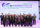

| 圖片 | 獎項 | 頒發機構 | 獎項內容或獲獎人物 |
|---|
| 2017年HH Sheikha Fatima Bint Mubarak達利獎 — 最佳女見習騎師 | Her Highness Sheikha Fatima Bint Mubarak | 見習騎師蔣嘉琦 |
| 首屆杜拜穆罕默德酋長卓越賽馬頒獎典禮 — 最受歡迎人物獎 | 穆罕默德酋長 | 見習騎師蔣嘉琦 |
| 星鑽服務大獎2016 — 慈善社會建設服務大獎 | 星島日報 | 香港賽馬會 |
| 神秘顧客服務協會「微笑大獎」 微笑主管卓越大獎 微笑主管大獎 微笑員工大獎 | 神秘顧客服務協會 | 零售部分行經理葉植良 零售部助理分行經理吳嘉欣 零售部助理分行經理莊珮嘉 零售部投注事務助理冼仲慧 零售部投注事務助理徐穎雯 |
| 皇家特許測量師學會香港年度大獎2017 物業部設施管理團隊大獎 | 皇家特許測量師學會 | 物業部設施管理團隊 |
|  | 2016年「香港無煙領先企業大獎」金獎 | 香港吸煙與健康委員會 | 零售部 |
 | 香港優質顧客服務協會「優質顧客服務大獎」 — 優秀組別獎（櫃員服務）優異獎 | 香港優質顧客服務協會 | 九龍灣德福場外投注處 |
| 香港零售管理協會2016傑出服務獎 零售（服務） — 大眾服務組別主管級別 零售（服務）— 大眾服務組別基層級別 優越表現獎 | 香港零售管理協會 | 零售部助理分行經理李志銘 零售部投注事務助理溫美珊 零售部投注事務助理葉冰 |
| 2016中餐烹飪世界錦標賽 創意前菜項目（個人組別）— 季軍 果蔬雕刻項目（個人組別） — 優異獎 | 中國烹飪協會 | 跑馬地會所幸運閣廚房頭鑊李振龍 |
| 第十屆亞洲名廚精英薈 — 前菜項目（個人）至尊金獎 | 粵港澳餐飲廚藝協會 香港入境旅遊接待協會 | 主理廚師(馬場中菜) 張浪然 |
| IKA奧林匹克世界餐飲競賽 熱食項目（即席烹調）— 銀獎 烹飪與糕點藝術組別 — 金獎 | 德國廚師協會 世界廚師聯合會 | 競駿會行政主廚陳思靈 跑馬地會所初級總廚周寶生 沙田馬場一級廚師黃冰生 |
| 2016年國際賽事化驗師及賽事管制獸醫聯合會議「青年科學家獎」 | 國際賽事化驗師協會 | 賽事化驗所化驗師陳顥文博士 |
| 2016「神秘客戶撥測大獎」— 銀獎 | 香港客戶中心協會 | 馬會綜合顧客服務中心「顧客服務熱線1818」及「馬會熱線1817」 |
| 「亞太區最佳公眾高爾夫球場」 | 亞太區高爾夫傳媒集團 | 賽馬會滘西洲公眾高爾夫球場 |
| 2016「環保園之友」 | 環境保護署 | 表揚馬會對環保園回收再造商的支持 |
| 金紫荊星章 | 香港特區政府 | 馬會行政總裁應家柏 |
| 2016美國供暖、製冷及空調工程師學會亞太區科技成就獎(新建樓宇) | 美國供暖、製冷及空調工程師學會 | 沙田通訊及科技中心 |
| 2016年香港管理專業協會最佳年報獎 非牟利與慈善機構類別優異年報獎 慈善機構類別卓越年報 | 香港管理專業協會 | 2014/15年度馬會年報 |
| 「優質物業設施管理大獎2016」 機構設施管理類別優異獎狀 | 香港物業管理公司協會 香港測量師學會 | 跑馬地馬場 |
| 企業可持續發展大獎 | 世界綠色組織 | 馬會致力將持續發展的概念融入日常營運 |
 | 廣東國際旅遊產業博覽會 「最佳旅遊景點獎」 「最佳組織獎」 「最佳展示創意獎」 「最佳合作獎」 「最佳活動組織獎」 | 廣東省人民政府 廣東省旅遊局 | 馬會協助推廣賽馬運動之旅遊魅力 |
 | 川寧茶調酒賽2016 亞軍 最佳演示及賣相 | 香港餐飲展 香港調酒專業協會 | 調酒員杜智傑 調酒員曾文濠 |
 | 環球廚神國際挑戰賽2016 國際美食組 — 環球廚神最高榮譽金獎 (總冠軍) 中華國際美食組 ─ 銀獎 中華國際美食組 ─ 銀獎 | 《現飲Gourmet》 環球廚神國際專業協會 | 馬場餐飲主廚朱偉漢及一級廚師黃冰生 馬場餐飲頭鑊林千國及三鑊郭敬生 滿貫廳二鑊黎家健及頭砧朱連柏 |
 | 2016香港青年技能大賽得獎者（餐飲服務組別） | 青年技能比賽常務委員會 | 陳穎思（跑馬地滿貫廳侍應） |
 | 「2016 International ARC Awards」非牟利組織：賽馬會界別 内頁設計銀獎 主席報告銅獎 | International Academy of Communications Arts and Sciences/MerComm, Inc. | 2014/15年度馬會年報 |
 | 公益慈善夥伴大獎 公益優異獎 | 香港公益金 | 馬會多年來捐助公益金 |
 | 亞太傑出顧客關係服務獎 2015 2015年傑出顧客服務經理（顧客服務中心 – 娛樂業） 2015年傑出顧客服務組長（顧客服務中心 – 娛樂業） | 亞太顧客服務協會 | 梁俊文 (美孚荔灣道場外投注處助理分行經理) 吳嘉欣 (中環士丹利街場外投注處高級分行主任) |
 | 第二十六屆國際Astrid大獎 非牟利組織類別最佳年報大獎 非牟利組織：傳統年報—其他國家組別金獎 機構組別非傳統雙語年報銅獎 年報攝影優異獎 | International Academy of Communications Arts and Sciences / MerComm, Inc. | 2014/15年度馬會年報 |
 | LEED NC 2009（新建築物組別）金級證書 | 美國綠色建築議會 | 沙田通訊及科技中心採取卓越的環保建築策略及措施 |
 | FHA國際廚藝挑戰賽 金牌 金牌 銀牌 銅牌 | Singapore Exhibition Services | 競駿會高級廚師鄧永超 跑馬地會所打餐廳廚房二廚徐威 沙田馬場熱廚房主廚黃冰生 沙田會所銀袋咖啡室高級廚師劉子健 |
| Randstad Award 2016 2016年香港最具吸引力僱主—第八位 | Randstad Hong Kong | 馬會的僱主形像 |
 | 關愛機構大獎 | 東周刊 | 馬會對慈善及社區的貢獻 |
 | 2016年香港開蠔挑戰賽
總冠軍
亞軍
季軍 | Cafe Deco Group
Worldwide Seafood Ltd. | 馬會餐飲二級廚師張雨華
競駿會二級廚師曾志康
馬會餐飲一級廚師黃宇宏 |
 | 首屆愛爾蘭威士忌雞尾酒創作比賽
亞軍 | 香港及澳門愛爾蘭節 | 馬場餐飲調酒員曾文豪 |
| Earth Partners 2015-2016
惜「電」任務 – 金級
惜「物」任務 – 銀級 | 地球之友 | 馬會致力推行可持續發展 |
| 香港綠色機構 | 香港綠色機構認證 | 馬會在推動環保方面的努力 |
 | 優質顧客服務大獎2015 優秀組別櫃台服務銅獎 優秀組別內部支援服務銅獎 傑出個人外勤服務優異獎 | 香港優質顧客服務協會 | 天水圍場外投注處 零售部市場項目組 廖英東（高級客戶服務主任） |
| 星鑽服務大獎2015 | 星島日報 | 馬會對經濟發展的貢獻 |
| 亞太地區史蒂維商業大獎 「企業通訊/公共關係 - 推廣活動：市場推廣 - 品牌管理」組別金獎 | Stevie Awards Inc. | 「青少年足球發展計劃」 |
| 「亞洲最佳企業社會責任實踐獎」- 「創新企業社會責任實踐」 | Chief Marketing Officer Asia | 「青少年足球發展計劃」 |
| 「全球傑出品牌獎」
傑出可持續市場推廣機構獎
服務及旅遊業傑出品牌嘉許獎
服務及旅遊業傑出品牌機構獎
傑出可持續市場推廣嘉許獎 | 世界品牌大會 | 馬會的品牌 |
| 「全球傑出市場推廣獎」
傑出運動項目推廣獎
傑出可持續市場推廣獎 | 全球市場推廣大會 | 「青少年足球發展計劃」 |
| 「北亞洲市場推廣活動大獎」
「最佳體育活動」銅獎
「最佳贊助活動」銅獎 | 《Marketing》雜誌 | 「青少年足球發展計劃」 |
| 「香港公關大獎」
「最佳公關推廣活動 - 公共服務組別」金獎 | 《Marketing》雜誌 | 「青少年足球發展計劃」 |
| 「香港市場推廣卓越大獎 」
「傑出大型活動獎」金獎 | 《Marketing》雜誌 | 「同心同步同樂日」 |
| 第六屆香港企業公民計劃
企業組別 - 優異獎 | 香港生產力促進局 | 馬會在履行社會責任方面的卓越成就 |
 | 2015神秘客戶撥測大獎 - 銀獎 | 香港客戶中心協會
香港品質保證局 | 馬會客務系統及策劃部屬下之綜合顧客服務中心 |
 | 2015 LinkedIn Hong Kong Customer Awards
Evolving Employer category
銅獎 | LinkedIn | 馬會率先起用職業社交網站LinkedIn進行招聘
馬會的企業形象 |
| 2015年傑出服務獎
零售（服務）組別主管級別獎
零售（服務）組別基層級別獎
傑出服務獎 | 香港零售管理協會 | 梁嘉偉 (灣仔軒尼斯道場外投注處分行副經理)
徐敏誼 (石峽尾偉志街道場外投注處投注事務助理)
陳適瑜 (元朗泰衡街場外投注處投注事務助理) |
 | 2015年香港管理專業協會最佳年報獎
非牟利與慈善機構類別優異年報獎 | 香港管理專業協會 | 2013/14年度馬會年報 |
 | 2014 International ARC Awards賽馬會組別
主席報告金獎
封面攝影/設計銅獎 | International Academy of Communications Arts and Sciences/MerComm, Inc. | 2013/14年度馬會年報 |
 | TAG No.5 Premium Canadian伏特加雞尾酒挑戰賽
最具創意雞尾酒
最佳味道雞尾酒 | 香港餐飲展
香港調酒學校 | 馬場餐飲酒吧部長杜智傑
跑馬地會所打吡酒吧高級侍應潘肇揚 |
| 「北亞洲市場推廣活動大獎」
「最佳活動 - 指定社區對象」銀獎 | 《Marketing》雜誌 | 「賽馬會青少年記者培訓計劃」 |
| 「北亞洲市場推廣活動大獎」
「最佳活動策劃團隊 - 機構內部部門」銀獎 | 《Marketing》雜誌 | 「公司業務策劃及傳訊」屬下的「品牌及項目事務部」 |
| 「全球傑出品牌獎」
傑出可持續市場推廣嘉許獎 | 世界品牌大會 | 「青少年足球發展計劃」 |
 | 亞太顧客服務協會傑出顧客關係服務獎
最佳客戶體驗中心 | 亞太顧客服務協會 | 天水圍場外投注處 |
 | 最優秀海報獎 | 第42屆國際高效液相分離及相關技術會議 | 賽事化驗所化驗師郭盈 |
 | 2015年香港國際美食大獎 中式烹調 擺設組 ─ 個人生果及蔬菜雕刻銀獎
中式烹調 現代中式熱盤烹調 ─ 創意前菜銀獎
中式烹調 現代中式熱盤烹調 ─ 豬柳銀獎
西式烹調 熱盤烹調（專業組別）真空慢火煮食 ─ 有機雞胸肉銅獎
西式烹調 熱盤烹調（專業組別）可持續魚類 ─ 龍躉銅獎
西式烹調 熱盤烹調（25歲以下學徒）可持續魚類 ─ 盲鰽銅獎 | 第十六屆國際食品及飲料、酒店、餐廳及餐飲設備、供應及服務展覽會 |
李振龍 (跑馬地會所幸運閣廚房二鑊)
陳立新 (跑馬地會所幸運閣廚房主廚)
曾錦輝 (馬場中菜廚房二鑊)
楊鴻堅 (馬場滿貫廳廚房三鑊)
李善衡 (上水雙魚河舊會所廚房一級廚師)
梁家輝 (跑馬地會所打吡餐廳廚房二級廚師)
梁仲宜 (馬場冷熱廚房二級廚師)
林景添 (跑馬地會所幸運閣廚房上雜)
黃竣勤 (沙田會所凱旋廳廚房二鑊)
|
| 第二十五屆國際Astrid大獎
機構組別傳統年報設計優異獎
年報攝影金獎 | International Academy of Communications Arts and Sciences/MerComm, Inc. | 2013/14年度馬會年報 |
 | 國際Mercury 企業傳訊大獎
年報整體表現金獎（非牟利機構組）
撰文優異獎（年報類別） | International Academy of Communications Arts and Sciences/MerComm, Inc. | 2013/14年度馬會年報 |
 | 星鑽服務大獎2015 慈善社會建設服務大獎 | 星島日報 | 馬會對社會的貢獻 |
國際認證") | 「有節制博彩」最高級別(第四級)國際認證 | 世界博彩協會 | 表彰馬會成功實踐及推廣有節制博彩 |
 | 「知慳惜電」節能比賽2014 勁減用量大獎(機構組)亞軍 勁減百分比大獎 (機構組) 亞軍 善心大獎 (機構組) | 香港地球之友 | 馬會節約用電措施成效卓越 |
| The Veterinary Journal Literary Prizes 2014 The TVJ Review Prize | The Veterinary Journal | ‘Doping Control analyses in horseracing: A clinician’s guide’ by Head of Racing Laboratory Dr Terence Wan and Racing Chemist Jenny Wong |
 | 2014年傑出服務獎 最佳服務團隊獎金獎 零售（服務）組別主管級別獎 零售（服務）組別基層級別獎 優質服務之星 | 香港零售管理協會 | 馬會零售部 葉俊楊 (深水埗汝州街場外投注處助理分行經理) 吳嘉欣 (中環史丹利街場外投注處) |
| 食肆組中式酒樓類別銅獎 飲食業安全獎勵計劃 | 勞工處 | 馬會滿貫廳 |
| 優質服務管理證書 | 香港品質保證局 | 綜合顧客服務中心 |
 | 最佳機構獎 捐贈基金大獎 香港/台灣市場類別大獎 | 「亞洲投資者」雜誌 | 馬會嚴格執行最佳業務守則及風險管理 |
| 第十五屆香港客戶中心協會年度大獎 神秘客戶撥測大獎 (商業及公用事業) 金獎 | 香港客戶中心協會 | 馬會綜合顧客服務中心 |
| 2014年最佳年報獎 非牟利與慈善機構類別銅獎 | 香港管理專業協會 | 2012/13年度馬會年報 |
| 低碳關懷標籤 二級低碳關懷標籤 | 低碳亞洲 | 馬會整體營運貫徹綠色環保理念 |
 | 優質物業設施管理大獎2014 機構設施管理卓越獎 | 香港測量師學會 香港物業管理公司協會 | 馬會物業部設施管理組的卓越表現 |
| 環球廚神．國際挑戰賽2014 中華美食組—環球廚神最高榮譽金獎 (總冠軍) 中華美食組—環球廚神最高榮譽金獎 點心組—環球廚神銀獎 點心組—XO醬最佳演繹大獎 歐陸美食組—環球廚神最高榮譽金獎 | 現飲Gourmet | 滿貫廳頭鑊曹佳榕及二砧張志鋒 馬場餐飲主理廚師張浪然
馬場餐飲頭砧陳禮民
滿貫廳二級點心吳玉晶
滿貫廳打荷胡秉良 中央廚房高級廚師林大為及馬榮華 |
| 深受遊客歡迎—港澳卓越品牌 | 中華傳媒 | 馬會的企業形象 |
 | 廣東國際旅遊產業博覽會 最佳展位 (全場200個光位展位中的前十名) 最佳合作伙伴 (全場唯一) | 廣東省人民政府
廣東省旅遊局 | 馬會協助推廣賽馬運動及娛樂 |
 | 香港青年技能大賽 西式烹調組別優勝者 | 青年技能比賽 | 沙田會所百俊廳初級廚師梁頌軒 |
| 仁愛堂環保園塑膠資源再生伙伴計劃2013-2014 卓越大獎 金獎 | 仁愛堂 | 馬會對塑膠回收再生作出的貢獻 |
| 環保園之友2012/13 | 環保園 | 馬會在減廢回收上的貢獻 |
 | 蘋果創意動廣告大獎2014 最佳數碼影片廣告獎 | 蘋果動新聞 | 馬會甲午馬年新春電視廣告成功將徐悲鴻大師的水墨駿馬立體及動畫化 |
 | 2013/14年度家庭友善僱主獎勵計劃 傑出家庭友善僱主獎 特別嘉許獎 | 家庭議會 | 馬會重視家庭的機構文化和環境 |
| 中國名廚精品菜展 中國精品烹飪能手 最具推廣價值獎 | 中國烹飪協會 | 滿貫廳菜式主廚林勸飛 |
 | 綠色中國2014環保成就獎 傑出可持續發展企業獎 | 文匯報 | 馬會於可持續發展的驕人成果 |
| 亞太傑出顧客關係服務獎2013 最佳客戶聯絡中心(娛樂業—200席位以下) 最佳顧客服務中心（娛樂業） 最佳效率顧客服務(娛樂業) 最佳企業服務隊伍 傑出顧客服務經理（客戶聯絡中心 – 娛樂業） 傑出顧客服務經理（顧客服務中心 – 娛樂業） 傑出顧客服務經理（技術支援中心 – 娛樂業） 傑出顧客服務組長（客戶聯絡中心 – 娛樂業） 傑出顧客服務組長（顧客服務中心 – 娛樂業） 傑出顧客服務組長（技術支援中心 – 娛樂業） 傑出顧客服務專業人員（客戶聯絡中心 – 娛樂業） 傑出顧客服務專業人員（顧客服務中心 – 娛樂業） 優異獎 – 傑出顧客服務經理（客戶聯絡中心 – 娛樂業） 優異獎 – 傑出顧客服務經理（顧客服務中心 – 娛樂業） 優異獎 – 傑出顧客服務組長（客戶聯絡中心 – 娛樂業）
優異獎 – 傑出顧客服務組長（顧客服務中心 – 娛樂業）
優異獎 – 傑出顧客服務專業人員（客戶聯絡中心 – 娛樂業）
優異獎 – 傑出顧客服務專業人員（顧客服務中心 – 娛樂業）
| 亞太顧客服務協會 | 馬會綜合顧客服務中心
馬會九龍灣德福場外投注處
馬會青衣電話投注中心 馬會申領管理組 (投注事務及系統部) 葉藹瑩 (電話投注支援經理)
梅芷婷 (九龍灣德福場外投注處分行經理)
梁寶珠 (申領主任)
吳慧敏 (助理電話投注支援經理)
陳冠湞 (九龍灣德福場外投注處助理分行經理)
廖啟玉 (申領組長)
黎凱恩 (電話投注服務助理 )
謝霈諭 (筲箕灣道場外投注處分行服務助理)
林德成 (電話投注支援經理)
曾鳯屏 (跑馬地藍塘道場外投注處分行經理)
陳麗華 (將軍澳尚德場外投注處分行經理)
陳偉聰 (助理電話投注支援經理)
陳誠斌 (助理電話投注支援經理)
曹嘉健 ( 顧客服務主任) 劉恩賢 (土瓜灣道場外投注處助理分行經理)
黃凱頌 (九龍灣麗晶場外投注處助理分行經理) 林惠笑 (粉嶺聯和墟場外投注處電話投注服務助理)
黃子峰 (電話投注服務助理) 勝禮健 (紅磡黃埔場外投注處分行服務助理)
林詩恩 (將軍澳尚德場外投注處分行服務助理) |
 | 公益慈善夥伴大獎 公益嘉許獎 | 香港公益金 | 馬會多年來對香港公益金的慷慨資助 |
| 優質培訓發展獎 嘉獎狀 (機構進修及發展) | 美國訓練及發展協會 | 電話投注事務部「老友記服務導師」培訓計劃 |
| FHA廚藝大賽 田園風味 (肉類/家禽/野味)組銅獎 海鮮餐點 (魚類/海鮮)組銅獎 國家隊挑戰組「Battle for the Lion」冠軍 | Food & Hotel Asia | 招健昌 (沙田會所百俊廳一級廚師) 林大為 (馬場主廚) 陳思靈 (馬場初級總廚)及香港廚師協會代表隊 |
| Randstad Award 2014 2014年香港最具吸引力僱主—第六位 | Randstad Hong Kong | 馬會的僱主形像 |
 | AVS 義行義跑『義』014 最積極行義團隊獎銀獎 | 義務工作發展局 | 馬會義工隊的積極參與 |
 | 第二十四屆國際Astrid大獎 年報（非牟利機構組）金獎 年報攝影銅獎 | International Academy of Communications Arts and Sciences/MerComm, Inc. | 2012/13年度馬會年報 |
 | 2014 香港資訊及通訊科技獎 最佳數碼娛樂獎大獎 最佳數碼娛樂(電腦動畫)獎金獎 | 政府資訊科技總監辦公室 | 馬會甲午馬年新春電視廣告成功將徐悲鴻大師的水墨駿馬立體及動畫化 |
 | 星鑽服務大獎2013 慈善社會建設服務大獎 | 星島日報 | 馬會對社會的貢獻 |
 | 香港服務大獎2014 殿堂級大獎 | 東周刊 | 馬會的品牌定位及對社會的貢獻 |
 | 2013/14年度Mercury企業傳訊大獎 年報整體表現銀獎（非牟利機構組別） | International Academy of Communications Arts and Sciences/MerComm, Inc. | 2012/13年度馬會年報 |
 | 優質顧客服務大獎 「優秀組別獎」櫃台服務金獎 | 香港優質顧客服務協會 | 馬會九龍灣德福場外投注處 |
 | 香港國際海岸清潔運動2013 最多件數垃圾 最特別海岸垃圾 | 環保促進會 | 馬會義工隊積極支持香港國際海岸清潔運動2013 |
 | 2013年義工服務嘉許狀 團體組「義務工作嘉許金狀」
義工小組「義務工作嘉許金狀」 義工小組「義務工作嘉許銀狀」
義工小組「義務工作嘉許銅狀」 | 社會福利署 | 馬會於2013年對社會作出超過一萬小時義務工作的貢獻 馬會「理髮義工小組」 深水埗「馬會明愛配一對」長者關愛計畫
馬會「深水埗獨居長者定期服務組」 馬會「元朗鄉郊獨居長者定期服務組」
馬會「桌上遊樂園」兒童定期服務組 |
 | 綠色辦公室獎勵計劃 「綠色辦公室」標誌 | 世界綠色組織 | 馬會積極推行綠色辦公室 |
 | 傑出可持續發展企業大獎 2013 | 香港可持續發展研究中心 | 馬會於可持續發展的驕人成果 |
| Best of the World finals in International Property Awards 2013/14 國際最佳休閒建築室內設計 | International Property Media | 表揚沙田馬場馬主廂房三樓的出色設計 |
 | 世界廚藝大師賽總冠軍 熱食組別 - 冠軍 冷盤項目 - 季軍 | Salon Culinaire Mondial | 陳思靈 (馬場初級總廚) 及五位香港酒店同業 |
 | 團體挑戰賽 季軍 | 香港僱主聯合會 | 二十三位馬會同事 |
 | 2013年度傑出市場推廣評選 傑出公關項目銅獎 傑出贊助項目銀獎 | Marketing Magazine | 馬會藉着「賽馬會青少年足球精英訓練營」推動香港足球運動發展的努力 |
 | 綠色中國2013環保成就獎 傑出可持續發展企業獎 | 文匯報 | 馬會於可持續發展的驕人成果 |
 | 2013年最佳業務實踐獎 最佳業務實踐大獎 企業社會責任獎 企業大學獎 僱員關懷獎 | 最佳業務管理集團 | 馬會在推動社會責任及人才培訓方面的卓越成績 |
 | 2013神秘客戶撥測大獎 金獎 | 香港客戶中心協會 香港品質保證局 | 馬會客務系統及策劃部屬下之綜合顧客服務中心 |
 | 2013傑出服務獎 零售（服務）組別主管級別 | 香港零售管理協會 | 陳冠湞 (將軍澳寶林場外投注處助理分行經理) |
 | 亨利爵士杜松子酒特色雞尾酒調酒比賽 冠軍 | 香港調酒員協會 Bar Talk雜誌 | 楊智宇 (馬會調酒員) 自創的雞尾酒「Spicy Rose」 |
 | 10,000小時義工服務獎 | 社會福利署 | 馬會於2011年貢獻了超過10,000小時參與社會義務工作 |
 | 第五屆香港傑出義工獎 優異獎 | 義務工作發展局 | 馬會「全方位學習工作坊」 |
 | 2013年度HKMA/TVB傑出市場策劃獎 優異獎 | 香港管理專業協會電視廣播有限公司 | 馬會「Happy Wednesday」推廣企劃 |
 | 卓越人力資源獎 2013 卓越學習及發展獎年度大獎 卓越人力資源領袖獎 | 香港人力資源管理學會 | 電話投注事務部「老友記服務導師」培訓計劃 馬會公司事務執行總監麥建華 |
 | 「優質旅遊服務」計劃 傑出優質商戶(中菜組)—銀獎 優異獎 傑出優質商戶員工服務獎(中菜組)—金獎 | 香港旅遊發展局 | 馬會滿貫廳 馬會百勝廳 黃顯文 (滿貫廳餐廳經理) |
 | 雞尾酒調酒大賽 亞軍 | 香港餐飲展 2013 | 杜智傑 (馬場餐飲調酒員) 自創的雞尾酒「Pink Storm」及「Queen Rose」 |
 | 綠色企業2013 | 資本企業 | 馬會將可持續發展策略融入其政策及業務運作，並將綠色概念推廣至大眾 |
 | 2013年最佳管理培訓及發展獎 技術培訓組別銅獎 傑出培訓員獎 優秀新晉培訓員獎 | 香港管理專業協會 | 電話投注事務部「老友記服務導師」培訓計劃 葉翰文 (電話投注事務經理) 蕭珊珊 (電話投注事務主任) |
 | TVB周刊傑出企業形像大獎2013 | TVB周刊 | 馬會的企業形象 |
 | 第十二屆香港職業安全健康大獎 宣傳推廣大獎 最佳視覺效果獎 最佳劇本獎 最佳演繹獎 | 職業安全健康局 | 馬會「職安健 齊伸展」計劃 |
 | 2013 International ARC Awards賽馬會組別 封面攝影/設計金獎 主席報告銅獎 攝影銅獎 內頁設計銅獎 | International Academy of Communications Arts and Sciences/MerComm, Inc. | 2011/12年度馬會年報 |
 | 美國之味 ─ 亞洲廚藝競賽 全場總冠軍 | 第23屆台北國際食品展覽會 | Eyck Zimmer (Chef de Cuisine, Derby Restaurant) Sing Lau, (Chef de Partie, Derby Restaurant) |
 | 慈善夥伴大獎 公益嘉許獎 | 香港公益金 | 馬會多年來對香港公益金的慷慨資助 |
 | 傑出顧客關係服務獎 2012年最佳客戶聯絡中心 (娛樂業 – 500席位以下) 2012年傑出顧客服務經理
（客戶聯絡中心 ─ 娛樂業） 2012年傑出顧客服務組長
（客戶聯絡中心 ─ 娛樂業） 2012年傑出顧客服務專業人員
（客戶聯絡中心 ─ 娛樂業） 2012年傑出顧客服務經理（客戶聯絡中心）
優異獎 2012年傑出顧客服務組長（客戶聯絡中心）
優異獎 2012年傑出顧客服務專業人員（客戶聯絡中心）
優異獎 | 亞太顧客服務協會 | 青衣電話投注中心
許永東（電話投注事務經理）
王萬偉（電話投注主任）
顏卉攸（電話投注服務助理）
陳玉珠（電話投注事務經理）
林秋瑩（電話投注主任）
梁偉基（電話投注主任）
劉浩泰（電話投注服務助理）
陳偉業（電話投注服務助理）
|
 | 低碳關懷標籤 | 低碳亞洲及彭博通訊社 | 整體營運貫徹綠色環保理念 |
 | 『您』想綠色生活選舉 傑出綠色貢獻大獎 | U-周刊 | 馬會對環境保護的卓越貢獻 |
 | International Property Awards 2013-2014 香港區五星級最佳休閒建築室內設計 亞太區最佳休閒建築室內設計 中國區休閒建築評審推薦獎 | International Property Media | 表揚沙田馬場出賽馬匹馬主廂房的出色設計 表揚賽馬會北京會所的出色設計 |
 | 2013年香港國際美食大獎 中式烹調 – 創意前菜金獎 中式烹調 – 創意前菜金獎 中式烹調 – 有機雞全肶金獎 中式烹調 – 有機雞全肶銀獎 中式烹調 – 有機雞全肶銅獎 美食家團體挑戰賽銅獎 | 第十五屆國際食品及飲料、酒店、餐廳及餐飲設備、供應及服務展覽會 | 張浪然 (馬場中菜主理廚師) 李振龍 (嘉樂樓二級廚師) 黎家榮 (嘉樂樓三級廚師) 翁萬海 (凱旋廳頭鑊) 吳軍 (滿貫廳頭鑊) 馬會廚師隊
司馬垣 (打吡餐廳菜式主廚)
陳敏順 (跑馬地會所主理廚師)
陳思靈 (馬場初級總廚)
鍾芷琪 (百俊廳二級廚師)
陳漢初 (打吡餐廳主廚)
洪明忠 (打吡餐廳一級餅師) |
 | 2012-13《香港人·香港心》義工大使行動嘉許狀 | 社會福利署 | 馬會義工隊參與及完成2012-13《香港人·香港心》義工大使行動,並為有需要人士送上關愛 |
 | 2013 CorpU卓越培訓及創新獎 最佳啟動項目大獎 最佳協作實踐獎 | Corporate University Xchange | 香港賽馬會學院及旗下二十四個政府資歷架構認可課程 |
 | 恆生八十周年 長期合作夥伴大獎 | 恆生銀行 | 答謝過去十四多年的良好夥伴關係 |
 | 2013年Randstad 企業大獎 香港最具社會責任企業 十大最具吸引力的僱主 | Randstad | 馬會多年來秉持的樂行善行使命 馬會正面的僱主形象 |
 | 無障礙網頁嘉許計劃 銀獎 | 政府資訊科技總監辦公室及平等機會委員會 | 馬會支持無障礙網頁設計 |
 | 2013香港資訊及通訊科技獎 最佳生活時尚（社交、傳訊、媒體）獎」銅獎 | 政府資訊科技總監辦公室 | 由馬會研發全球最大的多點觸控式娛樂設施ibu |
 | Astrid Awards 2013 封面設計榮譽獎 | International Academy of Communications Arts and Sciences/MerComm, Inc. | 2011/12年度馬會年報 |
| 2013/14 年度「同心展關懷機構」 | 香港社會服務聯會 | 馬會對社會的關懷及作為企業公民的承擔 |
 | 星鑽服務品牌選舉2012 「惠澤社群慈善大獎」 | 星島日報 | 馬會對社會的貢獻 |
| 資本傑出市場策劃榮譽大獎 | 資本雜誌 | 表揚馬會在推廣賽馬上不斷創新，成功開拓年輕客戶，改變大眾認為賽馬落伍的觀念。 |
 | 2012/13年度Mercury企業傳訊大獎 封面設計銀獎 | International Academy of Communications Arts and Sciences/MerComm, Inc. | 2011/12年度馬會年報 |
 | 香港優質顧客服務大獎 2012 卓越顧客服務項目獎 個人獎櫃員服務組 銀獎 銅獎 | 香港優質顧客服務協會 | 現金投注事務部顧客服務計劃「服務基本法」 投注事務助理葉俊揚 投注處分行主任梁嘉偉 |
| 「知慳惜電」節能比賽2012 勁減用量大獎(公司組)冠軍 「知慳惜電」善心大獎 (公司組) | 香港地球之友 | 馬會節約用電措施成效卓越 |
 | VTC30周年傑出贊助獎 VTC30周年策略伙伴獎 | 職業訓練局 | 馬會對專業教育培訓的貢獻 |
 | 「CAPITAL CEO非凡品牌大賞2012」 「非凡業務應用創新方案品牌大獎」 | CAPITAL CEO | 由馬會研發全球最大的多點觸控式娛樂設施ibu |
 | 新婚生活易大賞2012 新人至愛會所婚宴大賞 | 生活易網站 | 馬會跑馬地馬場優質婚宴服務 |
| 香港綠色企業大獎2012 優越環保管理(企業) – 金獎 企業綠色管治獎 – 管理系統 | 環保促進會 | 馬會在推動環保方面的努力 |
 | 2012手機市場推廣卓越大奬 「最佳行動定位推廣」銀獎 | Marketing Magazine | 「馬會熱點」手機程式 |
| 《米芝蓮指南香港澳門2013》推介餐廳 | 《米芝蓮指南》 | 馬會滿貫廳 |
 | 2012年義工服務嘉許狀 團體組别「義務工作嘉許金狀」 義工小組「義務工作嘉許金狀」 義工小組「義務工作嘉許金狀」 義工小組「義務工作嘉許銀狀」 義工小組「義務工作嘉許銀狀」 義工小組「義務工作嘉許銅狀」 | 社會福利署 | 馬會於2012年對社會作出超過10,000小時義務工作的貢獻 馬會「全方位學習工作坊」 馬會「理髮義工小組」 馬會「深水埗獨居長者定期服務組」 馬會「元朗鄉郊獨居長者定期服務組」 馬會「桌上遊樂園」兒童定期服務組 |
 | 綠色中國2012環保成就獎 傑出可持續發展企業 | 文匯報 | 馬會於可持續發展的驕人成果 |
| SCB社會資本動力獎 | 社區投資共享基金 | 表揚及嘉許馬會對香港社會資本發展及貢獻 |
 | IKA奧林匹克烹飪大賽2012 凍盤擺設組別及熱廚房組別銀獎 | 德國廚師世界協會 | 馬會廚師司馬垣和陳敏順，以及三位香港代表 |
 | 「2012年最佳業務實踐獎」的「簡易化及可用性獎」 | 最佳業務管理集團 | 由馬會研發全球最大的多點觸控式娛樂設施ibu |
 | Galaxy Awards 2012 「最佳年報」獎 「年報－非牟利組織」類別金獎 | International Academy of Communications Arts and Sciences/MerComm, Inc. | 2010/11年度馬會年報 |
 | 2012市場推廣卓越大奬 流動市場推廣組別銀奬 | Marketing Magazine | 「馬會熱點」手機程式 |
 | 神秘客戶撥測大奬2012 - 金獎 | 香港客戶中心協會及香港品質保證局 | 馬會綜合顧客服務中心 |
 | 2012傑出服務獎 零售（服務）組別主管級別獎項 零售（服務）組別基層級別獎項 | 香港零售管理協會 | 場外投注處分行主任周家麟 投注事務助理游嘉儀 |
 | 2012年香港管理專業協會最佳年報獎 非牟利與慈善機構類別銀獎 | 香港管理專業協會 |
2010/11年度馬會年報
|
 | 香港區恒天然烘焙大賽2012 專業廚師組「安得利傳媒大獎」 | Fonterra Foodservices | 跑馬地會所糕餅主理廚師杜力豐及二級廚師譚嘉龍創作的忌廉芝士蛋糕及特色甜品 |
 | 2012年最佳管理培訓獎 技術培訓組別金獎
優秀新晉培訓員獎
| 香港管理專業協會 | 為場外投注及馬場投注部設計的人力資源發展計劃「轉出服務新領域」 高級培訓主任陳志峰和金詠詩 |
 | Web Marketing Association's WebAward 2012 - "Entertainment Standard of Excellence" | Web Marketing Association | 馬會內部的可持續發展網站 |
| 10,000小時義工服務獎 | 社會福利署 | 馬會於2011年對社會作出超過10,000小時義務工作的貢獻 |
 | 「卓越級別」減廢標誌 | 香港環保卓越計劃 | 致力實踐各項減廢措施。 馬會總部
沙田綜合大樓
沙田馬場
跑馬地馬場
跑馬地會所
沙田會所
雙魚河鄉村會所 |
 | 2012美食之最大賞 「龍蝦組」至高榮譽金獎 「老菜新吃－桂魚卷組」銀獎 | 香港旅遊發展局 | 跑馬地馬場滿貫廳總廚林勸飛與助手張志峰 滿貫廳頭鑊吳軍與助手楊鴻堅 |
 | 國際賽事化驗師協會(AORC)最高榮譽獎 青年科學家獎 | 國際賽事化驗師及獸醫會議 | 溫思明博士 (賽事化驗所主管)
王嘉欣博士 (署任賽事化驗師)
|
| 資企業家綠色企業 2012 綠色企業大賞 | 資本企業家 | 馬會在推動環保及貫徹可持續發展的努力 |
| 最佳客戶呼叫中心設計金獎 最佳自動服務科技應用銀奬 最佳創新科技 (內部方案) 優異獎 | Contact Center World | 馬會天水圍天話投注中心的空間設計 電話投注自動服務系統以客為尊的創新設計 有助提升電話投注事務助理服務水平的電話投注智能提示客戶訊息系統 |
 | 2012/13 年度「同心展關懷機構」 | 香港社會服務聯會 | 馬會對社會的關懷及作為企業公民的承擔 |
 | 亞太傑出顧客關係服務獎 2011年最佳效率顧客服務年度大獎 2011年傑出顧客服務經理（客戶聯絡中心 — 娛樂業）年度大獎 2011年傑出顧客服務組長（客戶聯絡中心 — 娛樂業）年度大獎 2011年傑出顧客服務專業人員（客戶聯絡中心 — 娛樂業）年度大獎 2011年傑出顧客服務組長（客戶聯絡中心 — 娛樂業）優異獎 2011年傑出顧客服務組長（客戶聯絡中心 — 娛樂業）優異獎 2011年傑出顧客服務組長（客戶聯絡中心 — 娛樂業）優異獎 | 亞太顧客服務協會 | 馬會電話投注事務部尊尚客戶服務中心 周惠玲（電話投注事務經理）
鍾詠珊（電話投注主任）
楊詠欣（顧客服務主任）
方志威（電話投注主任）
鍾穎芹（電話投注主任）
莊潔群（顧客服務主任）
|
 | 2012年環保設計先鋒大獎 室內建築類別榮譽獎項 | FuturArc | 馬會天水圍電話投注中心的環保建築設計 |
 | 資本壹週最佳市場營銷大獎2012 最佳體育及娛樂活動營銷推廣大獎 | 南華傳媒 | 「快活週三派」品牌成功吸引新一代馬迷參與賽馬活動 |
 | 2012機構基金管理投資表現大獎 - 最傑出機構投資者 | 《亞洲投資者》雜誌 | 馬會庫務部的卓越基金管理表現 |
 | 高空綠化大獎2012 學校及非政府機構項目組別銀獎 | 「高空綠化大獎2012」 | 馬會總部大樓的綠色天台「綠之源」 |
 | 2011香港環保卓越計劃 公營機構及公用事業界別銅獎 | 香港環保卓越計劃 | 馬會在推動環保及貫徹可持續發展的努力 |
 | 韓國「大田市國際烹飪大賽」 省市組別金牌 | 第三十五屆世界廚師組織協會全球大會 | 跑馬地會所初級主理廚師陳敏順，與四位來自本港酒店廚師組成的香港代表隊 |
 | 2011/12年度「同心展關懷」機構 | 香港社會服務聯會 | 馬會對社會的關懷及作為企業公民的承擔 |
 | FHA 2012廚藝大賽（新加坡） 頭盤擺設組別 — 銀獎 擺設組別 — 銅獎 森林和原野組別 — 銅獎 海鮮組別 — 銅獎 | Food & Hotel Asia | 林冠倫（馬場主廚） 陳思靈（馬場助理主廚） 招健昌（跑馬地會所六化郎一級廚師） 鍾芷琪（沙田會所百俊廳二級廚師） |
 | 香港資訊及通訊科技獎2012 最佳無間斷網絡（流動資訊娛樂）金獎 最佳商業系統（應用）銀獎 | 香港無綫科技商會 | 馬會手機投注服務應用程式
馬會新一代賽馬資訊管理系統
|
 | Astrid Awards 2012 封面設計銅獎 機構組別傳統年報設計優異獎 | International Academy of Communications Arts and Sciences/MerComm, Inc. | 2010/11年度馬會年報 |
 | 星鑽服務品牌選舉2011 「惠澤社群慈善大獎」 | 星島日報 | 馬會 |
 | 2011/12年度Mercury企業傳訊大獎 內頁設計銀獎 | International Academy of Communications Arts and Sciences/MerComm, Inc. | 2010/11年度馬會年報 |
 | MLA黑盒廚藝大賽 全場總冠軍 最佳主菜 最佳餐湯 | 澳洲肉類及家畜有限公司 | 跑馬地會所廚師代表隊 跑馬地會所廚師代表隊 沙田馬場廚房廚師代表隊 |
 | 優質顧客服務大獎2011 熱線中心服務組別優秀團體金獎 櫃員服務組別優秀團體銀獎 | 香港優質顧客服務協會 | 馬會綜合顧客服務中心 馬會鰂魚涌場外投注處 |
 | 「國際彩票業名人堂」 | The Public Gaming Research Institute | 馬會投注事務執行總監陳承楷 |
 | 知慳識電節能比賽2011 「知慳識電」勁減用量冠軍大獎 (公司組) | 香港地球之友 | 馬會為改善能源效益及鼓勵員工節能所作的努力 |
 | 神秘客戶撥測大獎 金獎 | 香港客戶中心協會及香港品質保證局 | 綜合顧客服務中心 |
 | 2011年義務工作 義務工作嘉許金狀（機構/團體） 義工小組「義務工作嘉許銀狀」 義工小組「義務工作嘉許銀狀」 義工小組「義務工作嘉許銅狀」 義工小組「義務工作嘉許銅狀」 | 社會福利署 | 馬會於2011年對社區作出超過一萬小時義務工作的貢獻 馬會「深水埗獨居長者」定期服務組 馬會「桌上遊樂園」兒童定期服務組 馬會「元朗鄉郊獨居長者」定期服務組 馬會「全方位學習工作坊」 |
 | 香港綠色企業大獎2011 「優越環保管理金獎 (企業) 」 「明智環保採購金獎(企業)」 | 環保促進會 | 馬會在推動環保方面的努力 |
 | 最佳業務實踐獎2011 「最佳業務實踐大獎」 「綠化環境企業發展獎」 「企業員工適健服務獎」 「學習及人才發展獎」 | 最佳業務管理集團 | 馬會致力推動環保、人才培訓和僱員身心健康發展 |
 | 「2011年度家庭友善僱主獎勵計劃」 - 「傑出家庭友善僱主」獎 | 家庭議會 | 馬會重視家庭的機構文化和環境 |
 | 「2011 傑出服務獎」 「最佳服務團隊獎」銀獎 「零售（服務）組別主管級別」獎項 「零售（服務）組別基層級別」獎項 | 香港零售管理協會 | 香港賽馬會 馬會場外投注處分行主任曾鳳屏 馬會投注事務助理葉俊楊 |
 | 綠色中國2011 環保成就獎大型評選頒獎典禮 傑出可持續發展企業 | 文匯報 | 馬會出色的可持續發展措施 |
 | 香港意大利菜飯烹飪比賽 冠軍 亞軍 | 意大利佳餚美酒國際峰會 | 跑馬地會所打吡西餐廳菜式主廚司馬垣 馬場廚房總廚師長狄祈奧 |
 | 新婚生活易大賞2011 「新人至愛會所婚宴大賞」 | 生活易網站 | 馬會跑馬地馬場優質婚宴服務 |
 | 2011年香港管理專業協會最佳年報獎 非牟利與慈善機構類別優異年報獎 | 香港管理專業協會 | 2009/10年度馬會年報 |
 | 第四屆香港傑出義工獎 – 優異獎 | 義務工作發展局 | 香港得得得運動十式義工組 |
 | 賽馬會組別攝影銅獎 賽馬會組別主席報告優異獎 賽馬會組別攝影優異獎 | International Academy of Communications Arts and Sciences/MerComm, Inc. | 2009/10年度馬會年報 |
 | 2011芭堤雅市廚藝盃季軍 | 第五屆芭堤雅食品及酒店業展覽2011 | 香港得勝廚師隊中的五名成員，其中兩位來自馬會跑馬地會所打吡餐廳及酒吧，分別是菜式主厨司馬垣及宴會厨房主厨曾耀強 |
 | 2011美食之最大賞 - 「飯組」金獎 | 香港旅遊協會 | 跑馬地馬場滿貫廳廚師陳有成及廖威揚 |
 | 2011年度國際奧委會「體育與社會責任大獎」 | 國際奧委會 | 馬會主席施文信對香港體育發展及慈善事務的貢獻 |
 | 「最佳商校伙伴」獎項 | 青年企業家發展局 | 馬會與聖母玫瑰書院組成的商校夥伴團隊 |
") | 「優質旅遊服務」計劃2011傑出優質商戶 ─ 優異獎 (食肆類別) | 香港旅遊發展局 | 馬會滿貫廳的優質餐飲服務 |
 | 「亞太傑出顧客關係服務獎」 2010年傑出顧客服務經理（客戶聯絡中心－娛樂業）年度大獎 2010年傑出顧客服務組長（客戶聯絡中心－娛樂業）年度大獎 2010年傑出顧客服務組長（客戶聯絡中心－娛樂業）優異獎 2010年傑出顧客服務組長（客戶聯絡中心－娛樂業）優異獎 2010年傑出顧客服務組長（客戶聯絡中心－娛樂業）優異獎 | 亞太顧客服務協會 |
梁寶芝﹝電話投注事務經理﹞
陳開怡﹝電話投注主任﹞
張淑懿﹝電話投注主任﹞
陳捷﹝電話投注主任﹞
李美芳﹝電話投注主任﹞
|
 | 2010年機構/團體「義務工作嘉許金狀」 2010年義工小組「義務工作嘉許金狀」 2010年義工小組「義務工作嘉許銀狀」 2010年義工小組「義務工作嘉許銀狀」 2010年義工小組「義務工作嘉許銅狀」
2010年義工小組「義務工作嘉許銅狀」 | 社會福利署 | 香港賽馬會 馬會「認識自己 放眼香港」暑期工作坊義工組 馬會「元朗鄉郊獨居長者」定期服務組 馬會「桌上遊樂園」兒童定期服務組 馬會「香港得得得」運動十式義工組 馬會「深水埗獨居長者」定期服務組 |
 | Astrid Awards 2011 非牟利機構組別設計金獎 機構組別傳統年報設計銀獎 機構組別傳統雙語年報設計銀獎 | International Academy of Communications Arts and Sciences/MerComm, Inc. | 2009/10年度馬會年報 |
 | 「2011香港國際美食大獎」 共十四個獎項，包括兩個金、六個銀及六個銅獎 中式烹調 － 金獎 中式烹調 － 金獎 西式烹調 － 銀獎 西式烹調 － 銀獎 西式烹調 － 銀獎 西式烹調 － 銀獎 西式烹調 － 銀獎 夢幻團隊挑戰賽 － 銀獎 中式烹調 － 銅獎 中式烹調 － 銅獎 中式烹調 － 銅獎 中式烹調 － 銅獎 西式烹調 － 銅獎 西式烹調 － 銅獎 | 第十四屆國際食品及飲料、酒店、餐廳及餐飲設備、供應及服務展覽會 | 十六位馬會厨師
伍偉國
陳有成 張雨華 馬榮華 林大為 阮逸雄 陳家會 鄭小萍、莫志強及鍾芷琪 黃衛航 陳衛安 廖威陽 李振龍 黃宇宏
Owen Panzica |
 | 「香港資訊及通訊科技奬2011」 「最佳綠色科技 (應用 ─ 組織機構) 優異證書」 | 綠色科技聯盟 | 馬會電話投注事務部引入的嶄新節能減碳「遙控電腦能源管理系統」 |
 | 2010 香港環保卓越計劃 界別卓越獎 ─ 物業管理 優異獎 | 2010 香港環保卓越計劃 | 馬會總部大樓 |
 | 2010/11年度Mercury企業傳訊大獎 最佳年報設計大獎 封面設計金獎 | International Academy of Communications Arts and Sciences/MerComm, Inc. | 2009/10年度馬會年報 |
 | 「『您』想綠色生活選舉」－「傑出綠色貢獻大獎」 | U Magazine | 馬會對環保活動的貢獻 |
 | 「星鑽服務品牌選舉2010」－「惠澤社群慈善大獎」 | 星島日報 | 馬會對社會的貢獻 |
 | Galaxy Award 2010 – 金獎 | International Academy of Communications Arts and Sciences/MerComm, Inc. | 2009/10年度馬會年報 |
 | 「香港綠色企業大獎2010」 「環保辦公室管理獎」銀獎 「明智環保採購獎」銀獎 | 環保促進會 | 馬會在推行一系列辦公室節能措施及落實綠色採購等方面的努力 |
| 「知慳惜電」節能比賽2010 「勁減用量大獎 （公司組）」季軍 | 香港地球之友 | 馬會總部大樓 |
 | 新婚生活易大賞2010 -「新人至愛會所婚宴大賞」 | 生活易網站 | 跑馬地馬場 |
 | 香港人力資源獎 2010 －「最佳僱主品牌獎」及「最佳人力資源團隊獎」 | Key Media International Limited | 馬會人力資源管理 |
 | HKMA/TVB傑出市場策劃獎 - 卓越獎 | 香港管理專業協會 | 馬會「125 週年項目」 |
| 「最佳可持續發展獎」 | 優質改善經驗交流會 | 馬會處理電子廢物的可持續方案 |
| 「2010傑出服務獎」 「零售（服務）組別主管級別」獎項 「零售（服務）— 動感生活組別基層級」獎項」 | 香港零售管理協會 | Club’s Off-Course Betting Branch Manager, Pinky Mui Club’s Betting Services Assistant, Chow Ka-lun |
 | 2010國際ARC Awards 賽馬會組別攝影金獎 賽馬會組別撰文銀獎 | International Academy of Communications Arts and Sciences/MerComm, Inc. | 2008/09年度馬會年報 |
 | 「2010年度全國消費者最喜愛香港名牌」-「永久殿堂級香港名牌金獎品牌」 | 中華（海外）企業信譽協會 | 香港賽馬會 |
 | 「2010年最佳管理培訓與發展獎」銅獎及最佳演繹獎 | 香港管理專業協會 | 馬會「馬不停蹄‧動力之源‧全靠您」培訓課程 |
 | 「工商業廢物源頭分類計劃」合作夥伴大獎 | 環境保護署 | 香港賽馬會 |
 | 2010年亞太區顧客服務中心最佳表現獎 「最佳技術創新」銀獎 顧客服務中心（大型）優秀榮譽 | ContactCenterWorld.com The Global Association for Contact Center Best Practices and Networking | 電話投注－即時轉帳服務 馬會天水圍電話投注中心 |
") | 2009/10卓越項目獎(專業級) | 香港人類工效學學會 | 馬會天水圍電話投注中心項目小組 |
 | 第三屆「挪威海產年青廚師大賽」冠軍 | 挪威海產出口協會及香港廚師協會 | 沙田會所百俊廳初級廚師鍾芷琪 |
 | 入圍作品－2010年優質建築大獎－優質建築主題獎: 社區設施項目 | 本地九大建築專業學會聯合主辦 | 馬會天水圍電話投注中心 |
 | 亞太傑出顧客關係服務獎 2009年傑出顧客服務經理 (客戶聯絡中心－娛樂業) 2009年傑出顧客服務組長 (客戶聯絡中心－娛樂業) 優異獎－2009年傑出顧客服務組長 (客戶聯絡中心） 優異獎－2009年傑出顧客服務組長 (客戶聯絡中心) | 亞太顧客服務協會 | 4名馬會電話投注員工 陳鳳群（電話投注事務經理） 陳子熊（顧客服務主任） 張寶明（電話投注主任） 楊麗興（電話投注主任） |
 | 慈善夥伴大獎 | 香港公益金 | 馬會多年來對香港公益金的慷慨資助 |
 | 年報封面攝影銀獎 | 第二十屆國際ASTRID大獎 | 2008/09年度馬會年報 |
") | FHA 2010 廚藝大賽（(新加坡) 金獎－現場熱炒－田園風味（肉類 / 家禽 / 野味） 銀獎－現場熱炒－雙人探戈（兩人組現場料理） 銀獎－國家隊挑戰賽－冷盤外觀鋪排 銀獎－國家隊挑戰賽－現場熱炒 | Singapore Exhibition Services Pte Ltd. |
陳敏順 (宴會－主廚師)
鄧俊民 (三級廚師)
梁嘉銘 (初級廚師) 梁嘉銘 (初級廚師) 謝楠榕 (助理主理廚師) |
 | 企業社會責任大獎 | 《資本雜誌》及《資本壹週》 | 馬會在慈善和社會項目，以至環境保護與持續發展方面的貢獻 |
 | 青年科學家獎 | 國際賽事化驗師及賽事管制獸醫聯合會議 | 馬會賽事化驗師何毅雯博士 |
 | 「元朗區傑出義工」 成人團體組優異獎 | 社會福利署 | 馬會義工隊於元朗區的義工服務 |
 | 國際Mercury 企業傳訊大獎 年報整體表現金獎（非牟利機構組） | International Academy of Communications Arts and Sciences/MerComm, Inc. | 2008/09年度馬會年報 |
 | 國際Mercury 企業傳訊大獎 撰文優異獎（年報類別） | International Academy of Communications Arts and Sciences/MerComm, Inc. | 2008/09年度馬會年報 |
 | 星鑽服務品牌選舉2009－惠澤社群大獎 | 星島日報 | 馬會對社會的貢獻 |
 | 「工作原動力 － 由關愛與歡笑出發」攝影比賽
「團隊精神」類別個人組冠軍 | 香港僱主聯合會 | 馬會物業部員工謝青松 |
 | 「工作原動力 － 由關愛與歡笑出發」攝影比賽
「綠色動力」類別個人組亞軍，及由嘉賓即場投票選出的「最佳相片獎」 | 香港僱主聯合會 | 馬會公共事務部員工梁賢初 |
 | 2009/10年度《周末畫報》最佳餐廳評選
最佳潮粵菜餐廳
最佳編輯推薦餐廳 | 國內雜誌《周末畫報》及法國干邑品牌馬爹利 | 馬會北京會所幸運閣
馬會北京會所凱旋廳 |
 | 2009年度亞太區客户方案大獎 | Ayaya Inc. | 馬會天水圍電話投注中心 |
 | 優質顧客服務大獎
團體組別櫃員服務金獎 | 香港優質顧客服務協會 | 馬會
沙田馬場「駿星匯」 |
 | 優質顧客服務大獎
個人組別內部支援服務銅獎 | 香港優質顧客服務協會 | 馬會
現金投事務注部系統推行及發展組成員李文威 |
 | 2009 香港人力資源獎2009-
最佳工作間健康實務獎 | Key Media International Limited | 馬會在推動員工於辦公室內外建立健康生活模式的卓越表現 |
 | 最佳業務實踐獎2009-
企劃領導獎 | Best Practice Management Group | 馬會天水圍保職創職計劃的創新意念及卓越領導 |
 | 第三屆香港傑出義工獎-
「企業獎 - 優異獎」 | 義務工作發展局 | 馬會積極推動義工服務，致力不斷服務社群的貢獻 |
 | 「香港經典品牌2009」-
「百年經典品牌大獎」 | 東周刊 | 表揚馬會於過去125年來致力服務香港，建設社會 |
 | 2009 最佳年報獎 – 優異獎（非牟利及慈善機構組） | 香港管理專業協會 | 2007/08年度馬會年報 |
 | 2009傑出服務獎 「零售（服務）組別基層級」獎項 | 香港零售管理協會 | 馬會投注事務助理
張詩恒 |
 | 2009傑出服務獎
「零售（服務）組別主管級別」獎項 | 香港零售管理協會 | 馬會場外投注處主任
林子譽 |
 | 「影響中國．共和國六十週年」評選活動中的「經典地標建築」及「慈善愛心企業」獎項 | 文匯報 | 馬會 |
 | 2009年度「HKMA/TVB傑出市場策劃獎」卓越獎 | 香港管理專業協會 | 馬會「北京2008年奧運馬術宣傳計劃」 |
 | 「2009美食之最大賞」
在「素菜」及「海鮮」組別共奪兩項「至高榮譽金獎」
「點心」組銀獎 | 中華廚藝學院 | 跑馬地會所幸運閣主廚李文星
跑馬地馬場滿貫廳初級廚師李嘉祈 |
 | 內頁設計銀獎
非牟利機構組別銅獎 | 2009年國際ARC大獎 | 2007/08年度馬會年報 |
 | 中華公益事業功勛企業、機構獎 | 《紅旗畫刊》及《中國報道》雜誌 | 馬會在內地和香港的卓越慈善貢獻 |
 | 2009大中華傑出設計大獎 | 香港傳藝中心 | 馬會天水圍電話投注中心暨義工及培訓中心的環境空間設計 |
 | 2009年全國消費者最喜愛香港名牌 – 綜合娛樂組別金獎 | 中華（海外）企業信譽協會 | 馬會 |
 | 「工商業廢物源頭分類計劃」模範成員 | 環保署 | 馬會 |
 | 美國加州士多啤梨美食創意大賽2009 – 金牌及銅牌 | 美國加州士多啤梨協會 | 來自馬會沙田馬場和跑馬地會所的廚師 |
| 中國民政部下屬「愛心2008」項目－特別貢獻獎 | 中國民政部 | 馬會北京會所貧困家庭病殘兒童救助活動 |
 | 卓越IT實踐企業大獎 | e-zone 電腦雜誌 | 馬會資訊科技事務處 |
 | 客戶聯絡中心 - 娛樂事務「個人組別」
年度大獎
優異獎 | 亞太傑出顧客關係服務獎 | 電話投注事務經理陳嘉麗 ： 傑出顧客服務經理
電話投注主任雷慧詩 ： 傑出顧客服務組長
電話投注事務兼職主任江家強 ： 傑出顧客服務專業人員
電話投注主任葉藹瑩： 傑出顧客服務組長
電話投注主任盧暉榕： 傑出顧客服務組長
電話投注事務兼職組長馮家輝 ： 傑出顧客服務專業人員 |
 | 2009香港國際美食大獎 – 九銀及十三銅 | 香港廚師協會及香港展覽服務有限公司 | 22位來自馬會四個會所及兩個馬場的中西廚師 |
 | 「2009 RFP傑出個人大獎 - 優質設備管理獎」 | RFP 雜誌 | 馬會物業營運及維修經理田國恆 |
 | 「香港最佳園林」選舉第四位 | 無铫電視明珠台 | 彭福公園 |
| 年報攝影銀獎
年報封面構圖銀獎 | 第十九屆國際ASTRID大獎 | 2007/08年度馬會年報 |
 | 「2008年防止警鐘誤鳴獎」金獎 | 香港警務署 | 馬會完善的保安設備及嚴格的保安操作守則 |
 | 金組榮譽證書 | 第二十九屆奧運會北京奧林匹克組織委員會（「北京奧組委」） | 馬會在北京2008年奧運會和殘奧會馬術比賽的貢獻 |
 | 「元朗區傑出義工選舉」成人團體組優異獎 | 社會福利署 | 馬會義工隊於元朗區的義工服務 |
 | 「2008電視節目欣賞指數調查」- 評審團大獎 | 由香港電台、電視廣播有限公司、亞洲電視及有線電視委託香港大學民意研究計劃進行 | 賽馬會慈善信託基金捐款予香港電台製作的資訊節目「香港歷史系列」其中一集「辛亥革命在香港」 |
 | 「星鑽服務品牌選舉2008」 - 惠澤社群慈善大獎 | 星島日報 | 馬會對社會的貢獻 |
 | 「優秀實踐」榮譽 | 美國培訓及發展協會 | 馬會為電話投注部兼職員工設計的「幻化凝聚力」培訓計劃 |
 | 「2008香港紅十字會賑災捐款嘉許禮」- 嘉許狀 | 香港紅十字會 | 馬會在2008年內地嚴重雪災及四川大地震的賑災行動 |
 | 「優質顧客服務大獎」- 傑出個人獎櫃員服務組銀獎 | 香港優質顧客服務協會 | 馬會將軍澳尚德投注處分行經理鄧月珍 |
 | 「亞洲最佳新高爾夫球場」獎 | 《亞洲高爾夫月刊》 | 賽馬會滘西洲公眾高爾夫球場東場 |
 | 亞洲高爾夫球場環境保護卓越大獎 | 《亞洲高爾夫月刊》 | 賽馬會滘西洲公眾高爾夫球場 |
 | 2008年度「中華慈善獎」特別貢獻獎 | 國家民政部 | 馬會傑出慈善貢獻 |
 | 亞洲地區釘甲比賽
六項金獎、五項銀獎、三項銅獎及全場總冠軍 | 馬來西亞全國馬術匯展暨國際馬術聯合會世界馬術耐力冠軍賽 | 馬會釘甲匠羅家明 (雙魚河)、羅承恩(雙魚河) 及吳偉健(屯門)，以及總馬術釘甲匠麥偉利 |
 | 「有節制博彩獎項：最佳員工培訓計劃」大獎 | 世界彩票協會 | 馬會有節制博彩政策培訓計劃 |
 | 香港名牌獎
最佳娛樂品牌組別獎 | 香港美國商會 | 馬會品牌 |
 | 2008傑出服務獎：零售（服務）組別主管級別 | 香港零售管理協會 | 馬會場外投注處主任陳詩慧 |
 | 「北京奧運會及殘奧會特別榮譽獎」榮譽証書及足銀獎章 | 第二十九屆奧運會北京奧林匹克組織委員會（「北京奧組委」） | 馬會在北京2008年奧運會和殘奧會的特殊貢獻 |
 | 環保建築大獎
現有建築類別（改建及加建項目） | 環保建築專業議會 | 馬會建造沙田奧運馬術比賽場地 |
 | 最佳工作間健康實務獎 | 香港人力資源獎2008 | 馬會 |
 | 2008全國消費者(最喜愛品牌)系列」評選活動 -「香港名牌金獎品牌」 | 中華（海外）企業信譽協會 | 馬會品牌 |
 | 2008年最佳管理培訓獎銅獎 2008年度傑出培訓員 | 香港管理專業協會 | 馬會為兼職員工設計的「幻化凝聚力」培訓計劃及人才培訓主任唐嘉儀 |
 | FHA 2008國際烹飪挑戰賽 Gourmet Team Challenge – 金獎 組別總團體 Best Gourmet Team – 亞軍 | FHA 2008國際食品與酒店業展 | 香港女廚師隊，五名隊員中其中一位成員李嫣婷，來自馬會跑馬地會所打餐廳及酒吧 |
| 年報整體表現優異獎 | 第18屆國際ASTRID 大獎 | 2006/07年度馬會年報 |
 | People's Choice Award | 美國建築師學會香港分會 | 競駿會餐廳 |
| 年報內頁設計金獎 | 2007/08年度Mercury 企業傳訊大獎 | 2006/07年度馬會年報 |
 | 2007中國傑出CIO | 中國《IT經理世界》雜誌及IDC國際數據公司 | 馬會資訊科技事務執行總監李惠光 |
 | 優質顧客服務大獎2007 | 香港優質顧客服務協會 | 馬會大圍顯徑場外投注處–優秀組別獎櫃員服務組銅獎 |
 | 優質顧客服務大獎2007 | 香港優質顧客服務協會 | 投注支援事務主任黎綺雯–傑出個人獎內部支援服務組別金獎 |
| Best Innovative Cookbook and Best Cook Book Photography in Singapore | Gourmand World Cookbook Awards | The Club's first cookbook, FOOD ART |
| Best Visual Effects Award | Quality Improvement & Experience Sharing (QIES) Convention | Presentation of the Club's Off-Course Betting Services Department on its project of "Ticket Mission" |
 | 管理發展學分獎 | 香港管理專業學會 | 馬會 |
 | 青年廚師法式奶類產品烹飪比賽冠軍 | N/A | 跑馬地會所六化郎咖啡室初級廚師蔡韶殷 |
 | 2007盛世優秀社責大獎 | 盛世傳播有限公司 | 馬會 |
 | 傑出企業策略大獎2007 hkjc | 東周皷 | 馬會在興建2008年奧運馬術場地及支援奧運馬術賽的創見和成功 |
 | 第五屆亞洲資訊科技大獎 – 最佳商業促進計劃(其他)組別大獎 | MIS 亞洲雜誌 | 馬會馬匹診療管理資訊系統 |
 | 2007全國消費者（最喜愛品牌）系列評選活動 -「香港名牌金獎品牌」 | 中華（海外）企業信譽協會、國際信譽研究院（中國）、中國中醫研究促進會、香港中國旅遊協會、香港電腦商會、香港旅遊業雇員總會、香港專業導遊總工會、香港入境團旅行社協會、香港理工大學合辦 | 馬會品牌 |
 | 「2007年度最佳管理培訓獎」銅獎 | 香港管理專業協會 | 馬會名為"掌握商業脈搏、勇登科技高峰"-「資訊科技人員實習培訓計劃」 |
 | CIO亞洲資訊科技大獎 | CIO亞洲雜誌 | 馬會馬匹診療管理資訊系統 |
| 國際Mercury 二十週年企業傳訊大獎 – 銀獎 | International Academy of Communications Arts and Science/Mercomm. Inc. | 二○○五/ ○六年度年報非牟利機構組別整體表現 |
 | 優質顧客服務大獎2006 | 香港優質顧客服務協會 | 馬會場外投注處 |
 | 優質顧客服務大獎2006 - 櫃員服務傑出個人獎銅獎 | 香港優質顧客服務協會 | 馬會投注處主任葉嘉銘 |
 | 百年經典品牌 | 東周刊及星島報業集團 | 獲獎機構共有23間，僅四間企業在香港逾百年歷史，馬會是其中之一 |
 | 傑出培訓員獎 | 香港管理專業學會 | 馬會人事部培訓組員工何佩珊 |
 | 二○○六年度傑出董事獎 - 法定/非分配利潤組織董事會 | 香港董事學會 | 馬會董事局 |
 | 二○○六年度傑出董事獎 - 法定/非分配利潤組織執行董事 | 香港董事學會 | 馬會行政總裁黃至剛 |
 | 最佳業務實踐獎 - 企業社會責任 | 最佳業務管理集團 | 長期致力推行有節制博彩政策，特別在2006年世界盃期間 |
 | 二○○六年模範殘疾僱員獎 | 勞工處 | 得獎者是林向玲女士, 人事助理，是一位聾啞人士 |
 | 二○○六年中國消費者最喜愛香港名牌
「我最喜愛的香港名牌」金獎品牌
「全國最喜愛品牌」大獎 | 由中華（海外）企業信譽協會、集思策劃有限公司、香港中國旅遊協會以及香港電腦商會聯合主辦 | 馬會品牌 |
| 二○○五/○六年度商業及僱員募捐計劃 - 二等榮譽獎及銘謝狀 | 香港公益金 | 馬會慈善捐款 |
| 全港青年廚師中餐烹飪比賽 – 金獎 | 中華廚藝學院 | 跑馬地會所嘉樂樓廚師張嘉裕 |
 | 法國政府農業部頒發的榮譽獎項 | 法國政府 | 表揚會所及款客事務部主管宋茂羅多年來支持及推廣法國美食文化及佳釀所作的貢獻 |
| 澳洲奔富酒莊獎學金獎第三名 | 奔富酒莊 | 跑馬地會所六化郎咖啡室蔡家寶 |
 | MIS Asia IT Excellence Awards - Best Business Enabler, Leisure Category | MIS亞洲雜誌 | N/A |
| CIO百大最佳亞洲公司 | CIO亞洲雜誌 | 資訊科技部 - 二十四小時顧客熱線服務計劃 |
 | 國際ARC 大獎銀獎 | International Academy of Communications Arts and Science/Mercomm. Inc. | 二○○四/○五年度年報封面相片／設計 |
 | Accredited with the new International Standard ISO / IEC 17025 : 2005 | The Hong Kong Accreditation Service (HKAS) | 賽事化驗所 |
 | 國際Mercury 企業傳訊大獎銀獎 | International Academy of Communications Arts and Science/Mercomm. Inc. | 二○○四/○五年度年報封面設計 |
 | Advertising Effectiveness Awards - Silver Effie | Association of Accredited Advertising Agents of HK in association with HK Advertisers Association | Corporate Marketing campaign: "The horse who made us proud" (Silent Witness) |
 | 中國旅客最喜愛的香港名牌
· 綜合品牌金獎 | 由集思策劃有限公司聯合主辦、香港中國旅遊協會以及香港電腦商會協辦 | 馬會品牌 |
| 二○○五年模範殘疾僱員奬 | 勞工處 | 得奬者是龔慶邦先生, 馬匹料理員，他是一位聾啞人士 |
| 二○○五/○六年度商業及僱員募捐計劃一等榮譽獎 | 香港公益金 | 馬會捐款 |
| 二○○五年亞洲創新大獎銀獎 | Asian Wall Street Journal, Singapore Economic Development Board and Global Entrepolis @ Singapore 2005 | 馬會資助港大防止自殺中心製作『憂鬱小王子之路』網站 |
| 亞太室內設計大獎賽金獎及銅獎 | 香港室內設計協會 | 金獎 - 馬會資助香港青年協會賽馬會建生青年空間的現代化工程
銀獎 - 跑馬地馬場Adrenaline Lounge |
| 認可環保高爾夫球場資格 | Audubon International, USA | 馬會資助賽馬會滘西洲公眾高爾夫球場有限公司 |
| 二○○五年香港國際美食大獎
· 一金、七銀及十一銅 | 香港廚師協會 | 西菜組金獎 – 打覉餐廳及酒吧廚師李根源
銀獎 – 陳澤仁，陳堅，林雲輝，劉梓強，盧偉強，黃重言，黃嘉乾
銅獎- 陳廣煜，張永民，徐民權，鍾健邦，劉子健，羅浩然，謝楠榕，屈繼棕，王志豪，黃竣勤，王嘉文 |
| 二○○五年國際雞尾酒調酒師比賽殿軍 | 香港廚師協會 | 資深調酒師陳則洪 |
| 法國藍帶美食會 – 藍帶旗士獎 | 法國藍帶美食會 | 打覉餐廳及酒吧菜式主廚顧啟賢 |
| 加州士多啤梨烹飪比賽 | 美國加州士多啤梨協會 | 跑馬地會所嘉樂樓廚師張嘉裕 |
| 亞洲最具影響力的IT領導人 | MIS亞洲雜誌 | 前任馬會資訊科技事務執行總監卞以信 |
 | CIO百大最佳亞洲公司 | CIO亞洲雜誌 | N/A |
 | 國際ARC 大獎
· 銅獎及優異獎 | International Academy of Communications Arts and Science/Mercomm. Inc. | 二○○三/○四年度年報非牟利機構組別整體表現銅獎；及封面相片及設計優異獎 |
| 二○○五年香港管理專業協會最佳年報比賽 | 香港管理專業協會 | 二○○三/○四年度年報
(非牟利及慈善機搆組別銅獎) |
 | Young Scientist Award | Asian Conference on Analytical Sciences (ASIANALYSIS) | 賽事化驗所化驗師何毅雯博士 |
 | Young Scientist Award | International Conference of Racing Analysts and Veterinarians (ICRAV) | 賽事化驗所化驗師梁毅華博士 |
 | 國際Mercury 企業傳訊大獎最佳年報 | International Academy of Communications Arts and Science/Mercomm. Inc. | 二○○三/○四年度年報 |
| 公益慈善夥伴大獎 | 香港公益金 | N/A |
 | 最佳管理培訓獎 - 金獎 | 香港管理專業協會 | 馬會以「足球投注培訓計劃」獲頒金獎 |
| 全港青年廚師中餐烹飪比賽 | 中華廚藝學院 | 沙田會所凱旋廳廚師賴國滕 |
| 法國藍帶榮譽會員勳章 | 法國藍帶美食會 | 跑馬地會所中菜總廚師長盧德仁 |
| 第三十六屆傑出推銷員獎 – 五強 | 香港管理專業協會及市場推銷研究社辦 | 馬會宴會部助理宴會經理李雅盈 |
| Award for Contribution to Educational Development | 香港理工大學 | 宴會部 |
 | 二○○四年顧客關係服務獎的香港區「最佳綜合支援隊伍」 | 亞太顧客服務協會 | 資訊科技服務團隊 |
| CIO百大最佳亞洲公司 | MIS亞洲雜誌 | N/A |
| Computerworld Honours Program – Laureate | Computerworld magazine | N/A |
 | 二○○四年最傑出機構投資者 | 金融管理雜誌《亞洲投資者》 | 庫務部 |
| 香港管理專業協會最佳年報比賽 | 香港管理專業協會 | 二○○二/ ○三年度年報
(非牟利及慈善機搆組別銅獎) |
 | Young Scientist Award | The International Association of Forensic Toxicologists (TIAFT) | 賽事化驗所化驗師何毅雯博士 |
| 國際Mercury 企業傳訊大獎
- 一金、一銀及二銅 | International Academy of Communications Arts and Science/Mercomm. Inc. | 二○○二/ ○三年度年報寫作金獎、內頁設計銀獎、封面設計銅獎及非牟利機構組別整體表現銅獎 |
| 香港超級品牌
- 品牌總冠軍
- 品牌領袖 | 「香港超級品牌」雜誌 | 馬會品牌 |
| 抗非典型肺炎傑出奬 | 明報及香港電台 | 成立跨部門小組制定政策以確保工作間保持衛生 |
| Excellence in Practice Awards - Citation for Workplace Learning & Development | American Society for Training & Development | Training 10,000 people for Hong Kong's first football entertainment business |
| 傑出實踐獎 | 美國培訓及發展協會 |
練馬師培訓計劃
|
| 香港職業安全健康大獎 – 安全科技成就大獎銅獎 | 職業安全健康局及勞工處 | 回收舊電池工具 |
| 香港職業安全健康大獎 – 宣傳推廣大獎銀獎 | 職業安全健康局及勞工處 | 馬上倡行職安健 |
| 全年建築大獎 | 香港建築師學會 | 馬會資助興建香港教育學院 - 賽馬會小學 |
| HoSTS - Certificate of Appreciation | Hong Kong Institute of Vocational Education, Department of Hotel, Services and Tourism Studies (HoSTS) | 宴會部 |
 | MIS創意大獎
| MIS亞洲雜誌 | 資訊科技部的桌面電腦更新計劃 |
| MIS 100 listing | MIS亞洲雜誌 | 馬會是全亞洲第二大資訊科技使用機構 |
| CIO百大最佳亞洲公司 |
CIO亞洲雜誌
| N/A |
| Computerworld Honours Program - Laureate | Computerworld magazine | N/A |
| 國際ARC 大獎
- 一金、一銀及兩個優異獎 | International Academy of Communications Arts and Science/Mercomm. Inc. | 二○○一/○二年度年報非牟利機構組別整體表現金獎, 內頁設計銀獎, 主席報告優異獎, 寫作優異獎 |
| 香港管理專業協會最佳年報比賽 - 優異獎 |
香港管理專業協會
| 二○○一/○二年度年報 (非牟利及慈善機搆組) |
| 國際Mercury 企業傳訊大獎銀獎 | International Academy of Communications Arts and Science/Mercomm. Inc. | 二○○一/○二年度年報封面設計銀獎 |
 | 二零零二年模範殘疾僱員奬銀獎 | 勞工處 | 得獎者是楊玉榮先生，馬匹料理員，他是一位失聰人士 |
| Best Practice Award - Winner, Training and People Development | Best Practice Management Group | 馬會會員事務處「卓越之旅」計劃 |
| Hong Kong Awards for Industry - Certificate of Merit in Technical Achievement | Hong Kong Awards for Industry | 資訊科技部 |
| MIS 100 listing | MIS亞洲雜誌 | 馬會是亞洲第二大資訊科技使用機構 |
| CIO百大最佳亞洲公司 | CIO亞洲雜誌 | N/A |
| CIO Asia Awards - Honoree | CIO亞洲雜誌 | 無線投注服務 |
 | 國際ARC 大獎
- 一金及二銀 | International Academy of Communications Arts and Science/Mercomm. Inc. | 二○○○/○一年度年報寫作金獎、攝影銀獎及封面相片／設計銀獎 |
| 二○○二年香港管理專業協會最佳年報比賽 - 優異獎 | 香港管理專業協會 | 二○○○/○一年度年報 (非牟利及慈善機搆組) |
| 二○○一年香港管理專業協會最佳年報比賽 - 銅獎 | 香港管理專業協會 | 一九九九年/○○年度年報 (非牟利及慈善機搆組) |
| The Asian HR Award 2001 - Outstanding Effort in MPF Implementation | HR Magazine – Home Essentials | N/A |
| MIS 100 listing | MIS亞洲雜誌 | 馬會是亞洲第三大資訊科技使用機構 |
 | CIO百大最佳亞洲公司 | CIO亞洲雜誌 | N/A |
| CIO 100 | CIO Asia | N/A |
| 最佳管理培訓獎 – 銅獎 | 香港管理專業協會 | 競賽馬匹管理證書課程 |
| 二○○○年模範殘疾僱員奬 | 勞工處 | 得奬者羅金燿，一級跑道雜務員 - 他是一位失聰人士 |
| 亞太區二千年文物古蹟保護獎 | 聯合國教科文組織 | 馬會資助西貢滘西洲洪聖古廟的重修工程 |
| 會長獎狀 | 香港建築師學會 | 馬會資助香港青年旅舍協會重建該會轄下的賽馬會摩星嶺青年旅舍 |
| MIS 100 listing | MIS亞洲雜誌 | 馬會是亞洲第三大資訊科技使用機構 |
| 香港管理專業協會最佳年報比賽 -
銅獎 | 香港管理專業協會 | 一九九八/九九年度年報
（非牟利及慈善機搆組別） |
| 良好人事管理奬 | 勞工處 | 「以人為本」管理政策 |
| 香港國際美食大獎
七金、十銀及七銅 | 香港廚師協會 | N/A |
| 1999 Concierge Choice Awards - Best Tourist Attraction in Hong Kong | WHERE雜誌 | 跑馬地賽馬項目在旅遊服務方面的貢獻 |
| 有效勞資溝通奬銀奬 | 勞工處 | N/A |
| 最佳管理培訓獎 – 卓越獎 | 香港管理專業協會 | Selling to the Board – Development Persuasive Writing Skills of HKJC Executives |
| Hong Kong Award for Services - Tourism Services | 香港旅遊協會 | 馬會的賽馬活動為旅遊服務帶來貢獻 |
| (Asia-Pacific) Best Food & Beverage Outlet 1998 - Gold Platter Award | 亞太會議雜誌 | 會員事務部 |
| IVE Chai Wan Partnership Award | 香港專業地教育學院 | 表揚會所及款客事務部主管宋茂羅在領導及培育年青一代所作的貢獻 |
| Martell Fusion Cocktail Competition – Champion | Martell Far East HK Ltd | 馬場飲食部員工 Danny Poon |
| 香港國際美食大獎
一金、二銀及六銅 | 香港廚師協會 | N/A |
| 一九九三年模範殘疾僱員奬 | Labour Department
勞工處 | 得獎者是劉瑞文先生，兼職售票派彩員，他是一位半身不遂者 |